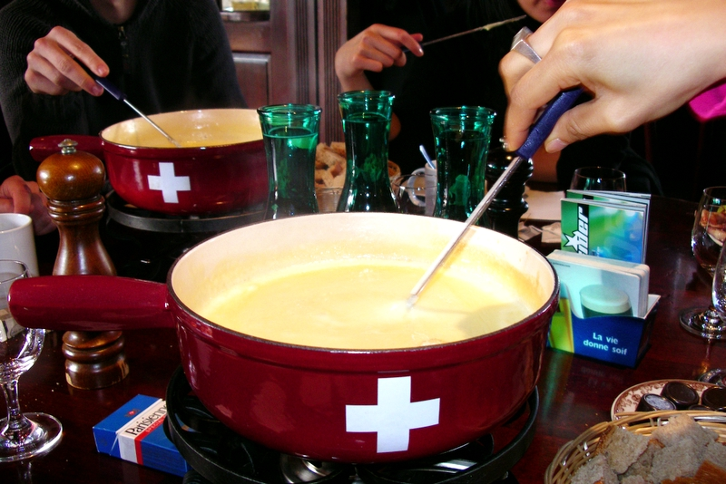

Fondue

Three cheese fondue uses classic Swiss cheeses Gruyere, Emmental and Comte. Is also uses Cider but that can be switched to White Wine.
Serve with stale chunks of bread, pickles etc
The use of Cornflour is essential!
Serves 4 (more likely 2 or 3)
ingredients
- 1 clove of garlic
- 400ml dry cider or 375ml of dry white wine
- 200g emmental, grated
- 200g gruyere, grated
- 200g comte, grated
- 25g of cornflour
Instructions
- Cut the garlic in half and wipe the cut ends around the fondue bowl. Add the cide/wine and herat gently until just bubbling
- Keep the heat gentle and gradually add in the cheese, stirring all the while. It will clump, it will look like it's seperating. Don't panic!
- Mix the cornflour with a little water to make a thin paste. stir into the fondue, keep stirring for a few minutes and watch the vornflour do it's thing
- transfer the bowl to the gel heater and serve with bread etc